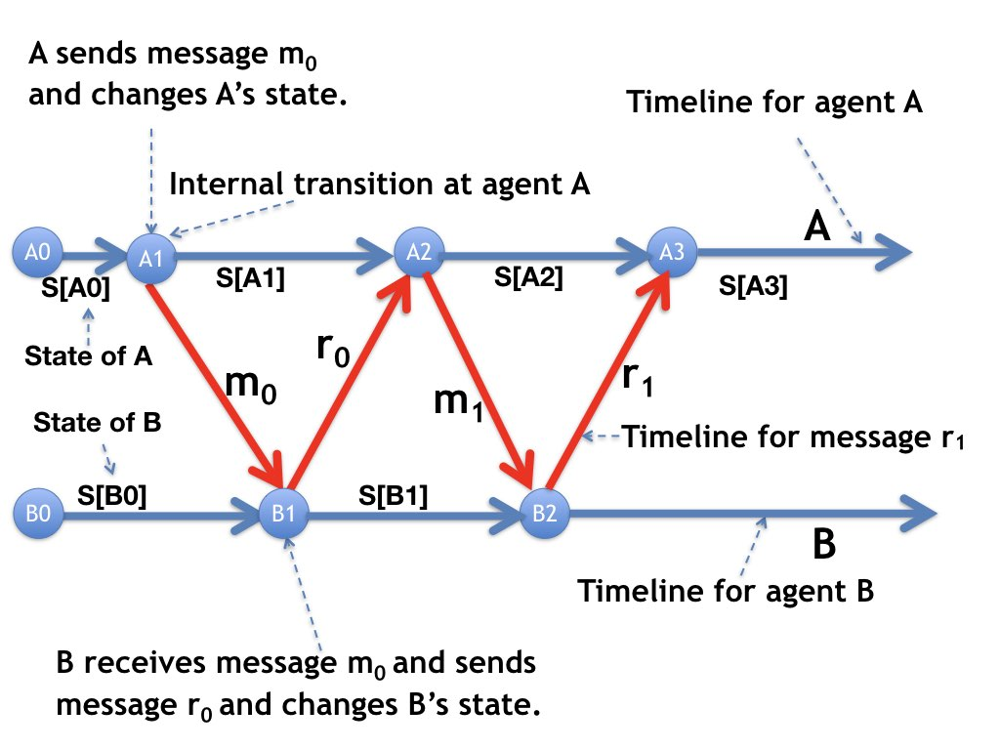
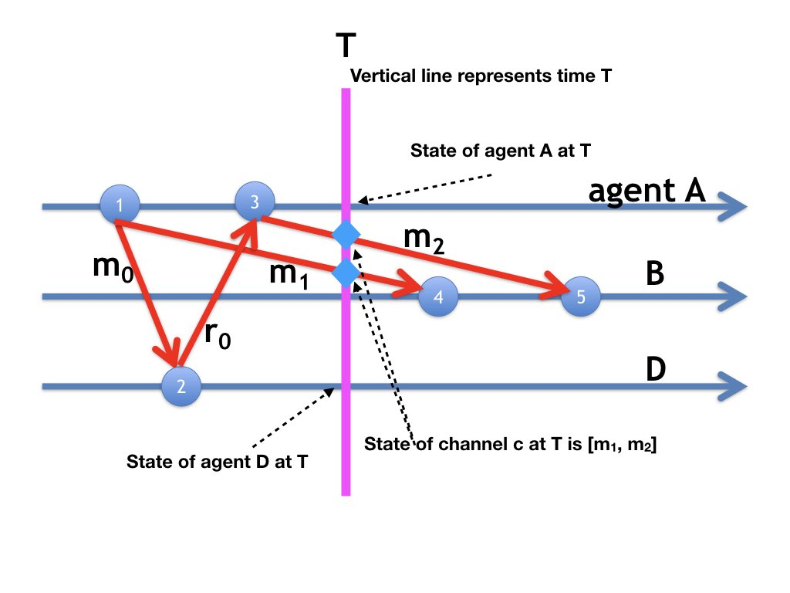
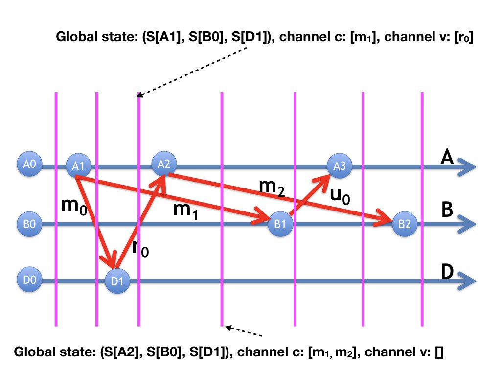
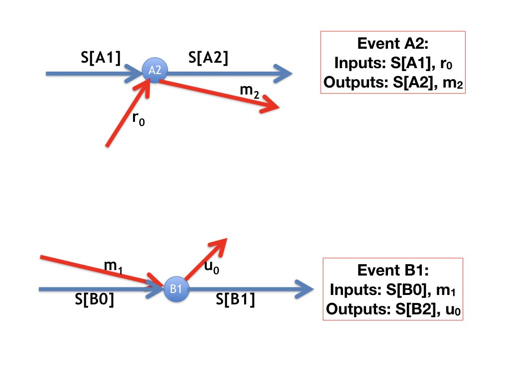
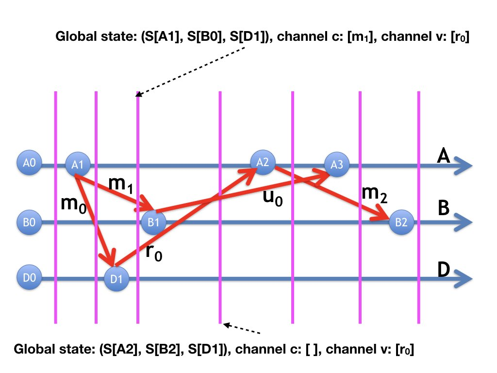

A timeline diagram depicts the evolution of a single
trajectory of a system over time. A state transition of an agent
during this trajectory is called an event at that agent in the
trajectory. In this module we restrict attention to a single
trajectory. So, all events refer to state transitions during
the same trajectory.
Timeline Diagrams
A timeline diagram is a labeled directed graph which is laid out in a
specific way. Vertices of the graph represent events. The graph has
an edge directed from an event at an agent to the next event at that
agent. An edge from the \(k\)-th event of an agent to the \(k+1\)-th
event of that agent is labeled with the state of the agent between the
two events.
In a timeline diagram, the horizontal (i.e. x-) axis represents time.
Each agent has its own timeline which shows the evolution of states of
that agent. An agent's timeline is represented by a horizontal line
and all the vertices representing events of an agent are placed on the
same horizontal line.
Example

Fig.1: A Timeline Diagram
In the figure the blue horizontal lines are the timelines for agents
\(A\) and \(B\). The blue circles numbered A0, A1, A2, A3 on the timeline for
agent \(A\) represent events at agent \(A\); likewise, blue circles
numbered B0, B1, B2 on the timeline for agent \(B\) represent \(B\)'s
events.
An event can be an internal state transition, which is one
without receiving messages. An example of an internal event is event A1
on the timeline for agent \(A\). Events A2, A3, B1, B2 are receive-message
events; these events occur when a message is received.
An edge along an agent's timeline is labeled with the state of that
agent at the point. For example, the edge from event A1 to event A2 is
labeled \(S[A1]\) which is agent \(A\)'s state after event A1 and
before event A2.
Message Timelines
A message \(m\) sent by an agent \(A\) at an event \(e\) and received by agent
\(B\) at event \(e'\) is represented by an edge directed from \(e\) to
\(e'\), and this edge is labeled \(m\).
In the diagram,
agent \(A\) sends messages \(m_{0}\) in event A1 and this message is
received by agent \(B\) in event B1, and the message is represented by
an edge directed from event A1 to event B1, and the edge is labeled
\(m_{0}\).
In this diagram agent \(A\) sends messages \(m_{0}\) and
\(m_{1}\), while agent \(B\)
sends messages \(r_{0}\) and \(r_{1}\).
Channel States in Timeline Diagrams
The state of a channel \(c\) at time \(T\) is the sequence (in time
order) of messages that are sent along \(c\) before \(T\) and that are
received after \(T\).
Example

Fig.2: Global State from a Timeline Diagram
The next diagram shows how the global state of the system --- the
states of all agents and channels --- at time \(T\) are represented in
the timeline diagram. The diagram shows timelines for agents \(A, B,
D\). Agent \(A\) sends messages \(m_{0}\) along a channel \(x\) and sends
\(m_{1}\) along a different channel \(c\) at event A1. When agent \(D\)
receives \(m_{0}\) at event D1 it sends message \(r_{0}\) to \(A\)
along a channel \(y\).
When agent \(A\) receives \(r_{0}\) at event A2 it sends message
\(m_{2}\) to \(B\) along channel \(c\).
When agent \(B\) receives message \(m_{1}\) at event B1 it sends message
message \(u_{0}\) to \(A\) along a channel \(v\).
In the diagram, the state of \(c\) at time \(T\) is the sequence of \(c\)-message
lines that are cut by the vertical line at \(T\); these are the
message lines for \(m_{1}\) and \(m_{2}\) in that order.
The state of an agent \(A\) at \(T\) is, likewise, the state on
\(A\)'s timeline at the point where the timeline is cut by the
vertical line at \(T\). (The label of the edge is not shown so as not
to make the diagram too crowded). The global state of the system at T
is obtained from the points at which agent timelines and message lines
are cut by the vertical line at \(T\).
The Trajectory: Sequence of Global States
A trajectory is a sequence of global states in a path from
an initial state in the global state-transition graph. The timeline
diagram represents a trajectory; the sequence of global states is
determined by moving the vertical line representing time after each
event.
Example

Fig.3: Global States in the Trajectory
The figure shows vertical lines corresponding to different points in
the timeline diagram before and after each event. The global state is
given by the states of all agents and channels. The global state
after events A1, B0, D1 is shown in the diagram; the states of agents
A, B, D at this point are \(S[A1], S[B0], S[D1]\), respectively. The
state of the channel \(c\) from agent A to agent B is a sequence consisting of the
single message \(m_{1}\), and the state of the channel \(d\) from
agent D to agent A is a sequence consisting of the
single message \(r_{0}\), and all other channels are empty.
The diagram also shows the next global state in which the agent states
are \(S[A2], S[B0], S[D1]\), and the state of channel \(c\) is the
sequence \([m_{1}, m_{2}]\), and all other channels are empty.
The Outputs of an Event depend only on its
Inputs
The inputs of an event on the timeline of an agent \(B\) are the state
of \(B\) immediately before the event and the message (if any) that is
received by \(B\) in the event.
The outputs of the event depend only on its inputs.

Fig.4: Event outpus depend only in its inputs
The figure shows two events: A2 and B1. The labels of the two edges
directed towards the event A2 are \(S[A1]\) and \(r_{0}\). So, the
labels of the edges directed from event A2 can be \(S[A2]\) and
\(m_{2}\), regardless of where event A2 appears in the timeline
diagram.
Similarly the outputs \(S[B1]\) and \(u_{0}\) of event B1 depend only
on its inputs, \(S[B0]\) and \(m_{1}\), regardless of where the event
occurs in the timeline diagram.
Look at the timeline diagram below obtained by flipping the order of events
A2 and B1 in figure 3. Because the inputs to these events are the same
in both diagrams their outputs are the same as well. The directed
graphs in both diagrams are identical; the difference is in the way
that vertices are laid out across time.

Fig.5: Flip order of Events
The trajectories in the two diagrams are different. For example, in
figure 5 the trajectory passes the global state in which the states of
agents A, B, D are \(S[A2], S[B0], S[D1]\), respectively, whereas this
global state is not entered in the trajectory of figure 3.
The trajectories are different though the graphs are identical.
Both trajectories start in the same global state and end in the same
global state;
however, they visit different global states along the way.
This observation gives us the following theorem.
Theorem
Let \(D\) be a timeline diagram representing a trajectory \(\tau\) of a
system. Let \(D'\) be obtained from \(D\) by permuting the order of
events with the restriction that all edges in \(D'\) are also directed
forwards in time. Then \(D'\) represents a trajectory \(\tau'\) of the
same system. Moreover, \(\tau'\) starts in the same state as \(\tau\) does,
and \(\tau'\) ends in the same state as \(\tau\) does.
Proof
The sequence of states of an agent in \(D'\)
is a valid trajectory of the agent
The graphs for \(D\) and \(D'\) are identical and so the sequence of
events and states of each agent are identical in \(D\) and \(D'\). The
proof that the graphs are identical is carried out by induction. The
induction hypothesis is that the inputs and outputs of the first \(n\)
events in \(D\) are the same as in the corresponding events in \(D'\).
The sequence of states of a chanel in \(D'\)
is a valid sequence
Because the graphs in \(D\) and \(D'\) are identical, messages along a
channel \(c\) are sent in the same order and received in the same
order in \(D\) and \(D'\). Because edges are directed forwards in
time, a message is received along a channel only after it is sent
along that channel in \(D'\). So, the sequence of states of a channel
in \(D'\) are queues with messages appended to the tail of the queue
and removed from its head.
Takeaway
Timelines are a familiar concept, and they are helpful in
understanding distributed systems and other multi-agent
systems. Analyzing the behavior of a system by studying the timelines
of each of the component agents can provide insight.